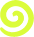
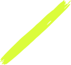
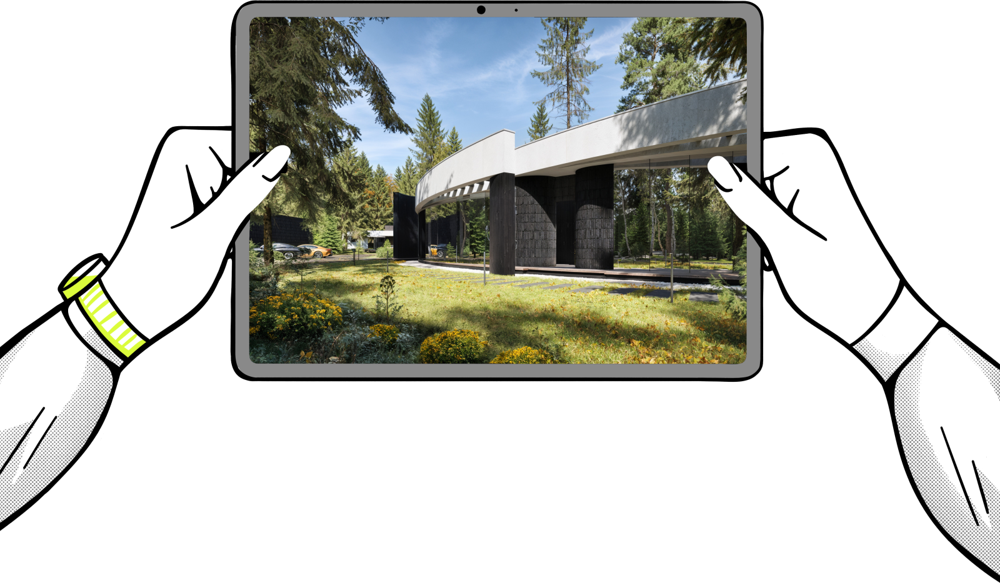
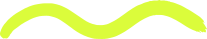
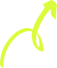
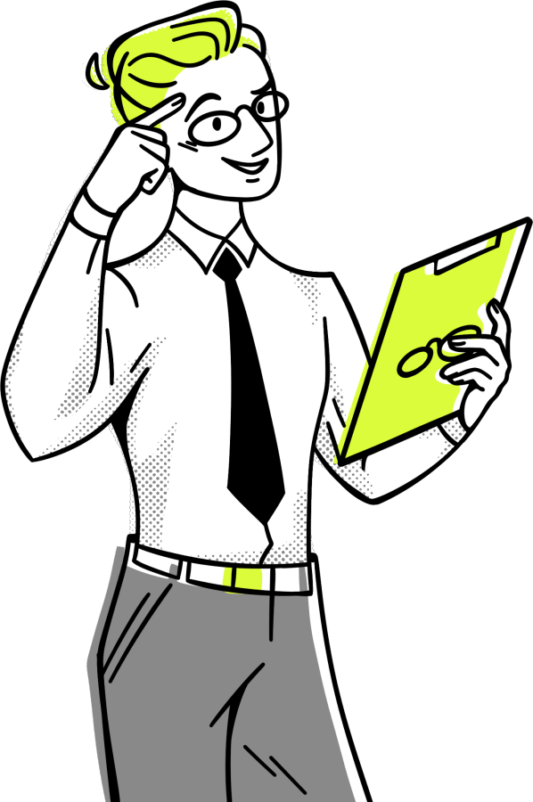
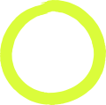
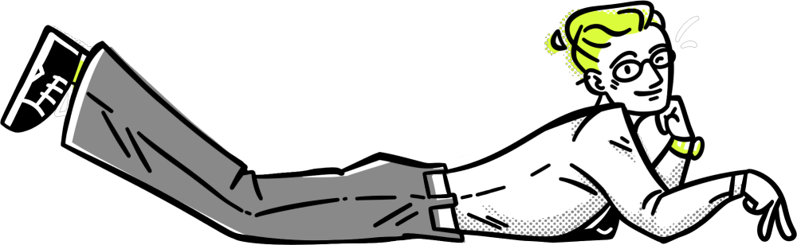

Чек-лист студии · для студентов
Визуализациядля подачи
Как довести рендер учебного проекта до кадра, который не стыдно поставить на защиту и в портфолио. Метод студии и те же требования, по которым мы сдаём работы заказчикам.
Приз игры «Собери проект»
8 страниц · 6 шагов


00
Как работать с листом
Хороший рендер — это на 80% свет и только на 20% всё остальное. Про всё остальное — эти восемь страниц.
Рендер студии до и после «Нейро Отличного метода». Ракурс, геометрия и свет те же — изменились небо, отражения, растения и фактура. Разбор деталей — на стр. 6.
Шесть шагов
- Сцена и кадр. Что проверить до рендера — стр. 3
- Нейрорендер по скриншоту. Если рендера ещё нет — стр. 4
- Нейро Отличный метод. Как сделать готовый рендер реалистичнее — стр. 5
- Детали. Десять мелочей, которые оживляют кадр — стр. 6
- Проверка перед сдачей. Требования студии к визуализациям — стр. 7
- Серия для подачи. Какие пять кадров нужны проекту — стр. 8
Галочки кликаются прямо в PDF. Можно и распечатать.

01
Сцена и кадр
Половина работы делается до нейросети. Проверьте сцену, пока исправлять дёшево.
Перед рендером
- Камера на высоте глаз — 1,5–1,7 м. Вертикали строго вертикальны.
- Фокусное расстояние 24–35 мм для экстерьера, 18–24 мм для интерьера. Шире — и дом «заваливается».
- Ракурс 3/4: видны два фасада, объём читается.
- В кадре есть передний план — ветки, трава, камни. Так появляется глубина.
- Время суток выбрано под задачу: день показывает материалы, вечер — атмосферу и подсветку.
- Всем поверхностям назначены материалы. Масштаб текстур проверен: кирпич, планкен, плитка.
- В окнах виден интерьер: свет, шторы, мебель. Дом выглядит обжитым.
- Скриншот без интерфейса программы, 16:9 или 3:2, от 1920 px по длинной стороне.
Свет меняет всё. Один дом и один ракурс: камера не «гуляет» между кадрами, меняется только время суток. Так студия проверяет точность — и так стоит делать пару кадров для подачи.
02
Нейрорендер по скриншоту
Когда рендера ещё нет: делаем кадр из скриншота модели или схемы. Мы работаем в Prome AI и Leonardo AI.
Порядок
- Откройте рендер по скетчу: в Prome AI это AI Tools → Sketch Rendering.
- Загрузите скриншот и картинку-референс по свету и настроению.
- Напишите промпт: тип здания, материалы, окружение, время суток, камера. Стартовый промпт — №10 в наборе «Улучшение визуализаций».
- Влияние исходника — на максимум, чтобы геометрия не «поплыла».
- Сделайте 4–8 вариантов и скачайте лучший.
Переговорная в бизнес-центре: схема с подписями материалов → готовый кадр. Мебель, свет и отделка — как в проекте.
Проверьте результат
- Этажность, проёмы и форма кровли совпадают со скриншотом.
- Нейросеть не добавила объёмов, окон и дверей, которых нет в модели.
- Материалы — те, что в проекте, а не «похожие».
- Сомневаетесь — положите кадр на скриншот полупрозрачным слоем и сверьте.
03
Нейро Отличный метод
Наш способ сделать готовый рендер реалистичнее. Подходит для кадров из Corona, V-Ray, Enscape, Twinmotion и нейросетей.
1
Откройте готовый рендер в Photoshop.
2
Уменьшите до 72–100 ppi и сохраните в JPG. Апскейлеру нужно «куда расти»: при увеличении он дорисует детали.
3
Загрузите картинку в нейросеть с инструментом Upscale. У нас это Leonardo AI.
4
Подвигайте ползунки креативности и детализации. Сохраните 3–5 удачных вариантов.
5
Сложите варианты слоями в Photoshop и проявите лучшие детали маской.
6
Дорисуйте мелочи в Generative Fill: ветки, листья, птиц. Цветокоррекция — и готово.
Дом с изогнутой кровлей в сосновом лесу. После метода: передний план, цветы, глубина травы, живые тени.
Больше реализма богу реализма!
Не гонитесь за «вау» в одном проходе. Три спокойных прохода с маской дают кадр, который не выдаёт нейросеть.

04
Детали, которые оживляют кадр
Разбор кадра студии: что добавили на шаге Generative Fill. Отметьте, что уже есть на вашем рендере.
1
2
3
4
5
6
7
8
9
10
- 1Небо. Живое, с облаками или градиентом, не плоская заливка.
- 2Воробей. Птица на кровле — масштаб без слов.
- 3Парапет. Ровная кромка ограждения: нейросеть её не «съела».
- 4Планкен. Видны волокна дерева и тени в швах.
- 5Отражения. В стекле небо и деревья, сквозь стекло — свет интерьера.
- 6Озеленение. Растения в переднем плане и у фундамента.
- 7Собака. Живой акцент, который замечают со второго взгляда.
- 8Белка. Ещё одна «пасхалка» для внимательных.
- 9Лист. Пара опавших листьев на дорожке.
- 10Камень. Дорожки и мощение с разной фактурой.
Правило стаффажа
- Детали показывают масштаб и жизнь, но не спорят с архитектурой: один-два живых акцента на кадр.
- Свет на добавленных объектах — с той же стороны, что и на доме, тени — той же мягкости.
- Для строгой подачи и конкурса — кадр без сюжета. Для портфолио и соцсетей — можно с историей.
05
Проверка перед сдачей
Те же требования, по которым студия принимает работы у своих визуализаторов.
Геометрия — главный критерий
- 100% совпадение с моделью: пропорции, этажность, проёмы, шаг конструкций.
- Нельзя добавлять или убирать объёмы, которых нет в проекте.
- Парные кадры «до/после» и «день/вечер» — из одного ракурса.
- Сомнение в геометрии — наложите рендер на модель.
Свет, материалы, реализм
- Физически достоверный свет и тени, без «пластикового» ИИ-глянца.
- Материалы читаются и соответствуют проекту.
- Никаких ИИ-артефактов: плывущие линии, слипшиеся окна, каша вместо текста.
- Люди, машины и растения не отвлекают от архитектуры.
Файл
| Параметр | Требование |
|---|
| Разрешение | не меньше 3000×2000 px |
| Формат | PNG без сжатия — в архив, JPG высокого качества — в презентацию |
| Цветовой профиль | sRGB |
| Водяные знаки и чужие логотипы | отсутствуют |
| Имена файлов | проект_ракурс_версия.jpg, без случайных имён генератора |
Чек-лист перед сдачей
- Геометрия сверена с моделью
- Ракурс совпадает с парным кадром
- Нет ИИ-артефактов при увеличении 100%
- Свет и материалы — как в проекте
- Разрешение и формат — по таблице
- Нет водяных знаков и чужих логотипов
- Файлы названы по шаблону
- Готова обложка проекта (стр. 8)

06
Серия для подачи
Один кадр показывает картинку. Пять кадров показывают проект.
1
Ракурс 3/4 днём. Главный кадр проекта.
2
Почти фронтально. Читается композиция и ритм окон.
3
Материал или узел крупно. Видно, что проект продуман.
4
Или вид из окна: связь дома и участка.
5
Тот же ракурс, что у дневного кадра, с подсветкой.
Обложка проекта
- Лучший кадр серии + плашка с названием проекта и вашим именем.
- 1:1 для соцсетей, 16:9 для портфолио, от 1920 px по короткой стороне.
- Один акцентный цвет — не больше 10–15% кадра.
Ещё больше разборов — в канале
Нейросети в архитектуре без воды: гайды, примеры «до/после» и новые инструменты. Канал ведёт студия «Нейро Отличник».
t.me/NeuroOtlichnikArch
neurootlichnik.ru
